iPhone 3G以降、Appleは基本的に2年に一度の大規模な革新のリズムを維持してきました。そして今年9月、画面が大型化し、外観が完全に新設計されたiPhone 6とiPhone 6 Plusを目にしました。内部面では、Appleはこの携帯電話に新しいA8プロセッサー、M8コプロセッサー、そしてApple Payモバイル決済に連携するNFC機能を搭載しました。

言うなれば、iPhone 5から5sへの変更と比較して、今回のiPhone 6は大規模なアップグレードです。発表会当晚の新浪手机のライブ中継状況からも、人々のiPhone 6への関心の高さが明確に感じられます。
正式発売前に、4.7インチ版iPhone 6小売版がすでに新浪手机に届いています。その実際の使用体験についてお伝えします。
「スリムでタイトな」ボディ：
これまでの歴代iPhoneと比較して、iPhone 6はついに幅が広がり、5や5sと比べて長さも増したため、画面は4.7インチに拡大されました。現在のAndroidスマートフォンは5インチ以上が主流のため、30人の同僚への調査を行ったところ、実機を見た後の大多数が4.7インチのiPhone 6のボディサイズは許容でき、大きいとは感じないと回答しました。

iPhone 6を手にした直後、ほぼ全員が「軽すぎる、薄すぎる」と口にしました。この6.9ミリの厚さの携帯電話は確かに驚きを与え、しかも129グラムの重量を維持しており、ボディは「スリム」と表現できます。その薄さに慣れてしまうと、手触りは非常に快適です。

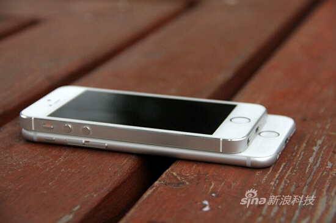
iPhone 6の一体感は非常に優れており、画面の外側には弧度のある研磨ガラスが覆いかぶさり、iPhone 6を滑らかで丸みのあるものにしています。また、画面と弧形金属フレームの接続も非常に自然で、手触りの向上に大いに貢献しています。ガラスと金属でここまでの全体的な美しさと質感を実現できるのは、おそらくAppleだけでしょう。さらに、このような画面設計により、画面を点灯すると、表示されるコンテンツが本体表面に「浮かんでいる」ような精巧な感覚があります。
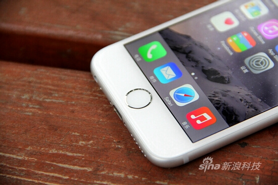
ボディが長くなったため、側面の音量ボタンは操作しやすいように延長され、電源ボタンは本体右側に移動しました。最初は少し戸惑うかもしれません。私たちが手にしたこの端末の音量ボタンと電源ボタン、そしてホームボタンの感触はやや硬めです。同時に、片手操作を考慮して、Touch ID領域をダブルタップすると画面を下に引き下げて片手モードに入る「便捷访问」（リーチャビリティ）機能が新たに追加されました。

ボディ背面は全体に陽極酸化金属が採用されていますが、上下のアンテナを覆う帯状領域がやや幅広です。私たちが手にした白い端末の背面にある灰色の帯状領域はすでにやや浮いて見えます。発表会当日に会場で3モデルを体験したところによると、ゴールドはより浮いて見え、スペースグレイが比較的最も自然です。とは言っても、ゴールドが大多数の中国人の選択であることは間違いないでしょう。
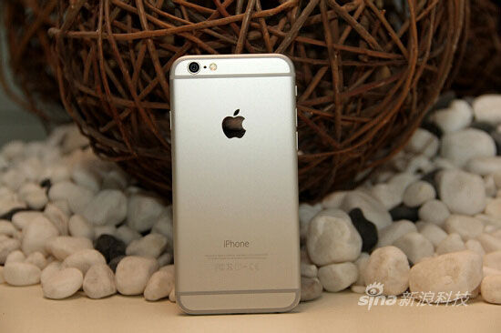

この帯状領域は、突出したカメラとともに、iPhone 6が批判される二大ポイントとなっています。これもAppleがiPhone 6の電波状況と撮影効果のために行った妥協です。
画面詳細の改良：
9月10日の発表会で、AppleのCEOクックは冒頭から2モデルのiPhone発表を宣言しました。これまでにリークされた外観やスペックとほぼ一致しており、おそらく唯一の驚きは、2モデルが同時に登場したことでした：1つは4.7インチ画面、もう1つは5.5インチです。今日新浪手机に届いたのは4.7インチ版で、画面は前世代（iPhone 5s、4インチ画面、1136x640ピクセル）より大型化し、解像度も向上しています。ただし、ピクセル密度の観点では、4.7インチ1334x750ピクセルの326PPIは5sと同じです。
Apple公式サイトのiPhone 6の広告コピーは「岂止于大」（大きいだけではない）です。Appleが伝えたいのは、今世代のiPhoneのあらゆる面での改良であり、その中で最もわかりやすく、最も注目されやすい点が画面面積の拡大です。
ここ2年、Androidメーカーはこぞってハードウェアに注力しており、iPhone 4以降、Appleはスマートフォンの画面サイズと解像度（ピクセル密度）のスペックで優位性を失っています。しかし、326PPIというピクセル密度はすでに人間の目の閾値に達しており、拡大鏡を使わなければ、4.7インチiPhone 6の326PPIと1080P画面の441PPIの鮮明度の違いはそれほど明確ではありません。

PPIは鮮明度に影響しますが、すでに肉眼の識別能力を超えています。他の要素の方が画面の感覚に与える影響はより顕著なため、iPhone 6の画面では別の方法で感覚体験を向上させています。
iPhone 6とiPhone 6 Plusの画面は、Appleによって「より大型で、より高解像度の全新Retina HD高清显示屏」と表現されています。具体的な利点は、より高いコントラスト、より広い視野角、より忠実な色彩、そして偏光板の追加に集約できます。
より高いコントラスト：Appleは光配向技術を使用し、紫外線でディスプレイ内の液晶の位置を制御して、より正確に適切な位置に整列させています。これにより、黒はより深く、文字はより鮮明になり、視覚体験が向上します。
より広い視野角：発表会で、AppleはiPhone 6の画面を紹介する際に「デュアルドメインピクセル（dual domain pixels）」に言及しましたが、詳細な説明はありませんでした。この技術は実は初めての使用ではなく、LGが2011年にAH-IPS表示技術を発表した際にも言及されており、2012年のHTC One Xや2013年のHTC One初代の画面でもこの技術が使用されていました。通常の液晶ピクセルとの違いは、デュアルドメインピクセルはピクセル電極が完全には整列しておらず、配列がねじれており、「傾斜した」サブピクセルが不均一な光源条件下でより良い性能を発揮し、視野角を向上させることを目的としています。

より忠実な色彩：最近のスマートフォンメーカーは「色域（Color Gamut）」のカバー範囲で画面の良し悪しを語ることを好みます。iPhone 6はフルsRGB色空間標準をカバーしていますが、実は多くのスマートフォンがこの標準に達しており、super AMOLED素材の画面を使用したSamsung S5はプロフェッショナルモードで137%に達することもできます。このパラメータの意味はもはや大きくありません。
それでは実際の体験について話しましょう。iPhone 6とiPhone 5sを比較した実際の結果は、色の違いはわずかで、画面を撮影する際にも、非常に近づかなければ基本的に違いはわかりません。
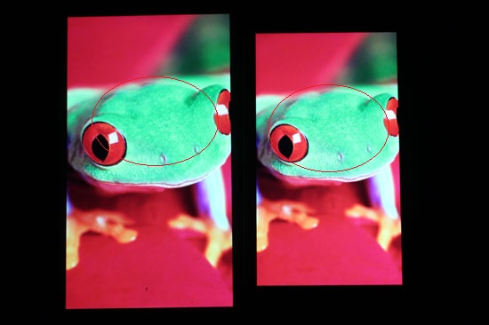
偏光板：Apple公式サイトの説明によると「太陽の下で使う必要がある時もあります」。もし今iPhone 5sをお持ちなら、サングラスをかけると画面の明るさが大幅に低下し、視認性に影響することがわかります。そこでAppleはLCDディスプレイと表面ガラスの間に偏光板（コーティング膜）を追加しました。わかりやすく説明すると、その役割はブラインド（鎧戸）のようなもので、光を遮断・透過する機能があり、サングラスをかけていても画面がはっきり見えるようにしています。

実際の使用体験としては、iPhone 6と5sの両方を最大画面輝度にした状態で、同じ画面をサングラスをかけて見ると、iPhone 6の方が5sや5cよりはっきり見えます。偏光サングラスの場合、5sではシャボン玉のような虹色のぎらつきが見られますが、iPhone 6ではそれがありません。

これがこの偏光板の役割であり、Appleがサングラス着用という特定の使用シーンで画面の視認性を向上させるために行った最適化です。前述のいくつかの点と比較して、偏光板の効果はより顕著です。
液晶自体に加えて、Appleは画面の外層も改良し、iPhoneとして初めて2.5Dアークガラスを採用しました。このデザインはかつてNokia N9スマートフォンで使用されていました。iPhone 6のUI操作には「画面外から画面内へスライドする」といった操作はありませんが、アークガラスは従来の直角ガラスより間違いなく手触りが快適です。つまり、アークガラスの機能は操作性の向上というより手触りの向上にあり、確かにこのスマートフォンにユーザー体験の向上をもたらしています。
ハードウェアとパフォーマンス：
iPhone 6は20ナノメートルプロセスの1.4GHzデュアルコア64ビットA8中央処理装置、M8コプロセッサーを搭載しています。今回もApple公式サイトの性能比較は初代iPhoneとの比較であり、その性能向上が5sと比較して革新的ではないことがわかります。

GeekBenchを使用すると、RAMが依然として1GBであることがわかります。テストスコアはシングルコア1630、マルチコア2921で、iPhone 5sのA7プロセッサーのデータ（シングルコア1383、マルチコア2541）と比較して、シングルコア17.86%向上、マルチコア14.95%向上です。
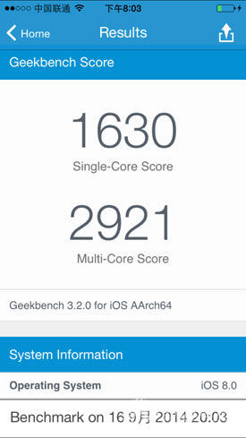
しかし、データの背後では、A8プロセッサーには新しいビデオエンコーダーと画像信号プロセッサーが内蔵されており、カメラとビデオ機能をサポートします。同時に、Appleの全新MetalエンジンはA8プロセッサーとiOS 8のグラフィックス性能を最大限に引き出すことができ、Metalゲームの増加に伴い、iPhone 6の性能優位性がより明確に現れると信じています。ネットワーク方式：
今回テストした機種は某国の小売版iPhone 6 A1586で、Apple公式サイトの対応ネットワーク方式リストによると、いわゆる「フルネットワーク対応」（全网通）です：
CDMA EV-DO Rev. A (800, 1700/2100, 1900, 2100 MHz)
UMTS (WCDMA)/HSPA+/DC-HSDPA (850, 900, 1700/2100, 1900, 2100 MHz)
TD-SCDMA 1900 (F)， 2000 (A)
GSM/EDGE (850, 900, 1800, 1900 MHz)
FDD-LTE (バンド 1, 2, 3, 4, 5, 7, 8, 13, 17, 18, 19, 20, 25, 26, 28, 29)
TD-LTE (バンド 38, 39, 40, 41)
実際のテストの結果、このA1586は聯通4G（TD-LTEかFDD-LTEネットワークのどちらに接続しているかは判別不可）、移動4Gをサポートし、電信UIMカードを挿入すると「中国电信 1X」が一瞬表示された後、「無サービス」と表示され認識できませんでした。ただし、正式発売時の各地域バージョンが基準となることにご注意ください。
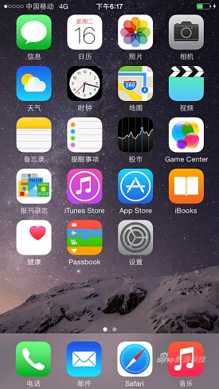


システム特別機能：
発表会で、Appleは自社のモバイル決済機能Apple Payの説明に多くの時間を割きました。これは一連のソフトウェアとハードウェアの組み合わせであり、決済環境が成熟して初めて実現できる機能です。しかしiPhone 6では、Passbookアイコンにクレジットカードのマークが追加された以外、ユーザーが感じられることはあまり多くありません。iPhone 6に搭載されたNFC機能も含めて、システムやコントロールセンターにNFCのスイッチは見当たらず、これは現在のAndroidスマートフォンとは大きく異なります。
たとえNFCが搭載されていても、決済という重大な問題が関わるため、Appleがポートを開放することはないと確信しています。そのため、iPhone 6がAndroidスマートフォンのように互いにタッチするだけでNFCでデータ転送できるようになることを期待していたユーザーは、その考えは一旦断念してよいでしょう。Appleには独自のAirDropがあり、それが彼らのワイヤレス転送ソリューションです。


もう一つの点は片手操作の問題だ。画面が大きくなれば、親指で画面対角の「戻る」に届かなくなるのは必然なので、Appleはシステムのアクセシビリティ機能に「簡易アクセス」というオプションを追加した。これをオンにすると、指でホームボタンを軽く2回タップするだけで（押し込む必要なし）、画面が3分の1下がり、残りの面積だけで片手操作が十分可能になる。約10秒間操作がないと自動で全画面に戻る。実はこの機能は一部のAndroidスマホにはすでにあったが、iPhoneの方が少しスムーズに感じられるようだ。しかしこの機能も完璧ではなく、例えばダイヤル画面でも使えるが、数字を入力しても通話ボタンに指が届かないことがある。
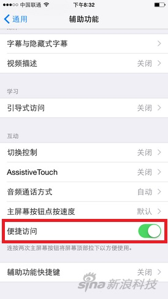
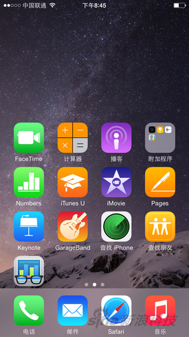
アプリの適応問題：
iPhone 3GSからiPhone 4へ、そしてその後のiPhone 5へと、iOS製品の画面解像度が変わるたびにアプリの一時的な非対応が引き起こされてきたが、今回も同様だ。4.7インチ版iPhone 6の多くのアプリでは、文字がぼやけて見える状況が見られるが、使用に影響はない。
iPhone 4sから5への移行を思い返すと、多くのアプリの上下に黒帯が残っていたが、iOSエコシステムの強みはまさに迅速に追従できるところにある。開発者が非対応の問題を解決するのにそれほど時間はかからないだろう。

写真撮影：iPhone 5sと比較して進化は明瞭ではない
今回のiPhone 6は噂されていたような画素数の向上はなく、依然として「頑なに」800万画素を採用している。現時点ではソニーのIMX145センサーかどうかは未確定で、単画素面積は1.5マイクロメートル、絞り値はiPhone 5sと同じf/2.2のままである。
また、iPhone 6は本体の厚みが減ったことで、レンズモジュールが背面から突出することになった。レンズを保護するため、レンズの周囲にはより高さのあるステainless鋼の金属リングが巻かれている。これは2007年の初代iPhone以来、初めてレンズが突出したiPhoneと言える。本体の薄型化のためにやむを得ず行った妥協でもある。

ただし、今回のiPhone 6はFocus Pixelsに対応した新しいセンサーを採用している。いわゆる「Focus Pixels」とは、一般的に「位相差検出オートフォーカス」と呼ばれるもので、従来のコントラストAFに対するものである。公式発表によると、位相差AFを採用したiPhone 6のフォーカス速度はiPhone 5sの2倍だという。

コントラストAFは、合焦点での画面のコントラスト変化に基づいている。コントラストが最大になる時が正確にピントが合った位置なので、フォーカス過程では何度も試行錯誤が必要で、画面が徐々に鮮明になり、コントラストも段階的に上昇する。そして、すでに合焦状態になった時もカメラは止まらず、レンズを動かし続け、コントラストが下がり始めたのを発見して初めてピークを過ぎたことに気づき、コントラストが最も高い位置に戻ってフォーカスを完了する。
一方、位相差AFは、最初から位相差検出の信号によって焦点位置を直接判断でき、現在の位置が焦点の前方か後方かを直接知ることができ、それによってレンズにどう動くべきかを指示する。合焦状態でも明確に知らせてくれるので、コントラストAFのような行ったり来たりの試行錯誤のプロセスが省かれ、フォーカス速度が大幅に向上する。
ただし、iPhone 6 Plusとは異なり、4.7インチのiPhone 6には光学式手ブレ補正システムは搭載されておらず、iPhone 5sと同じ自動画像手ブレ補正を採用している。つまり、4枚の写真を高速連写し、それをインテリジェントに1枚に合成することで、本体のブレや動体のぶれを軽減するものだ。そのため、物理的な光学式手ブレ補正システムを採用したiPhone 6 Plusと比較すると、当然ながらやや劣る。後者はレンズの逆方向の動きで手ブレの物理的なずれを補正し、画像を安定させている。
実際の撮影效果について言えば、数枚の写真を比較したところ、iPhone 6とiPhone 5sの画質に明確な差は見られず、色再現やシャープネスはほぼ同一と言える。ただし、夜間撮影ではiPhone 6の明るさがある程度向上しているのが確認でき、同時に暗所でのカラーノイズも減少している。
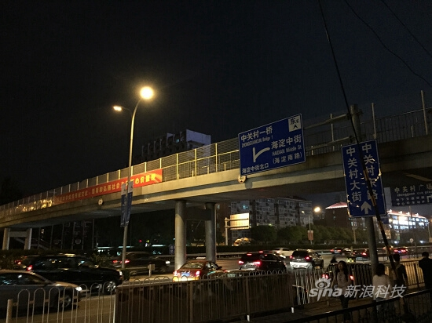

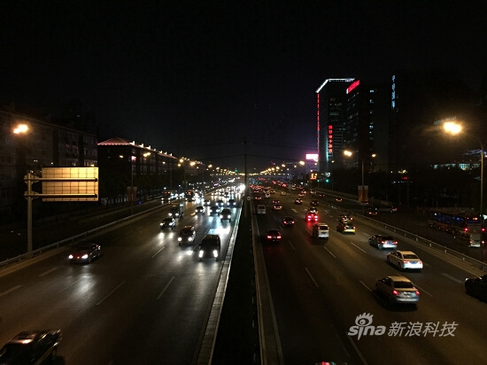
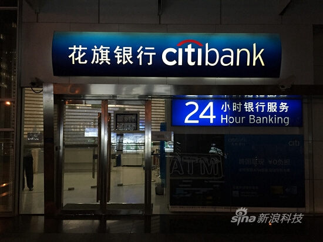
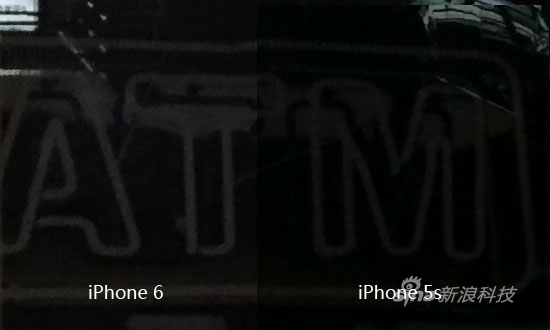
Focus Pixels対応の新しいセンサーのおかげで、iPhone 6のフォーカス速度は確かに明らかに向上しているが、Appleが宣伝するほどの2倍には達していない。同時にタッチフォーカスを行うと、iPhone 5sがまだフォーカスの拡大・縮小を行っている時点で、iPhone 6はすでに正確にピントを合わせている。この変化は連写時に特に顕著である。
さらに強調すべき点として、今回のiPhone 6はフロントカメラの絞り値が大きくなり、f/2.4からf/2.2に向上した。新しいセンサー技術と組み合わせることで、最大81%多くの光を取り込むことができる。またiOS 8では手動露出補正のスライダーが追加され、画面を軽くタッチした後、上下にスワイプするだけで露出補正を調整し、適切な明るさの画像を得ることができる。
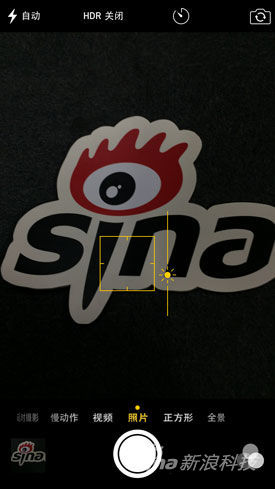
iOS 8で新たに追加された手動露出補正スライダー


編集者の見解：
臧智渊（ザン・ジーユエン）：
iPhoneの画面がついに大きくなった！iOSはついに4.7インチのiPhone 6という選択肢を提供し、さらに大きな5.5インチのiPhone 6 Plusもある。外観について言えば、背面のアンテナラインとカメラの突起という妥協点はあるものの、メタルとガラス素材による「スリムでタイトな」ボディの輝きを覆い隠すものではない。
今回のiPhone 6シリーズの売上は依然として問題にならないだろう。多くの人が本当に悩むのは4.7インチにするか5.5インチにするかで、5.5インチのPlusはバッテリー、光学式手ブレ補正、画面解像度の点でより優れている。個人的には4.7インチの方が普段持ち歩いて使うのに適しており、5.5インチは特大画面のスマホを好む消費者に適していると思う。中国本土での早期発売を望む。
また言及すべき点として、システム内にはNFC関連の機能（画像転送など）は見当たらず、Apple Payのメニューもない。Appleは独自の方法でNFCを使用しており、米国での発表会後のコミュニケーションで、Appleがすでに中国の関連機関と交渉を開始していることを把握している。Apple Payが中国本土で一日も早く利用できるようになることを願っている。
何金（ホー・ジン）：
否定できないのは、iPhoneの画面が大きくなったことでAppleに記録的な受注量と前例のない注目度をもたらすだろうということだ。しかし私は依然として、iPhone 6には心を揺さぶるようなキラー機能がないと思う。そしてその感覚は、発表会を見終わった後から実機を手にした後にかけてより強くなった。
慣例的なハードウェア更新は今回も主にプロセッサーにのみ表れているようだ。そして、滑らかさにおいて根本的に問題がないiPhone 5sの上では、iPhone 6の優位性は体験上見つけ難い。さらに、指紋認証や写真撮影の平行移植によって、このスマホの特長は指で数えられるほど少なくなっている。
スマホに関して言えば、私は間違いなく「外観重視派」の一員だ。前面のiPhone 6はほぼ完璧だが、背面の太いアンテナの切れ目や突出したカメラはどうしても無視できない。
要するに、iPhone 6の4.7インチ画面は、iPhone 5sのTouch IDが当初私に与えた興奮感ほど強くはない。おそらく国内でApple Payの商業エコシステムが成熟すれば、私の見方も変わるかもしれない。
郭晓光（グオ・シャオグアン）：
iPhone 5s/5cから6への移行で、2世代のiPhoneの進化の道筋がはっきりと見える。Appleは5cのアークエッジ、5sのTouch ID指紋認証、そして64ビットプロセッサーなどの技術を熟練させた後、ついにそれを大画面スマホに採用した。しかし、性能、画面表示、写真撮影の面で、4.7インチ版のiPhone 6と5sの差が我々の想像よりもはるかに小さいことを認めざるを得ない。
外観については、傍観者はいつもレンダリング画像の中に「カメラの突起」「背面アンテナが太い」などの難点を見つけ出すものだが、実機を手に持ってみると、それらは想像していたほど受け入れ難いものではない。
iPhone 4や5が発表された時に「ダサい」と言っていた人々が、今では「クラシック」と言っているのを覚えているだろうか？ Appleは毎回新しい美的習慣を生み出している。現在の予約数量が、すでにこのスマホが人々の心の中で占める位置を物語っている。
クリックしてノートを共有
<p style="font-size:14px;">ノートは本記事の内容の拡張である必要があります！</p><br> <p style="font-size:12px;"><a href="../tougao.html" target="_blank">記事投稿はこちらをクリック</a></p> <p style="font-size:14px;"><a href="./runoob-user-test-intro.html" target="_blank">登録招待コードの取得方法</a></p> <h3 class="text-muted"><i class="fa fa-info-circle" aria-hidden="true"></i> ノートを共有する前に<a href=".." class="runoob-pop">ログイン</a>が必要です！</h3> <p><a href="./runoob-user-test-intro.html" target="_blank">登録招待コードの取得方法</a></p>